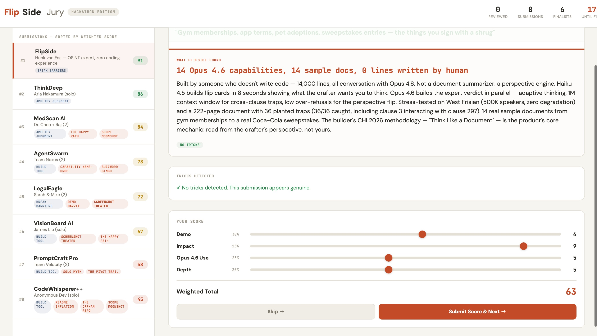

This is the tool I planned.

But never made.
I thought:
if Opus 4.6 is this good
at reasoning —
let it come up
with the idea itself.
I made it interview me.
How I work. How I think.
What "Think Like a Document" means.
One rule:
the tool must be Opus
showing off its reasoning.
8 hours.
Man and machine.
No code.
Together we came up with...
a product where
the product is Opus 4.6.
It doesn't use AI.
It is AI thinking out loud.
Every card. Every verdict.
Every trick it catches.
That's Opus reasoning
— made visible.